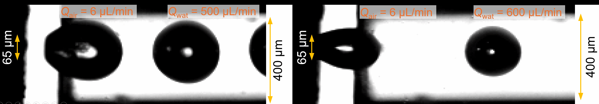
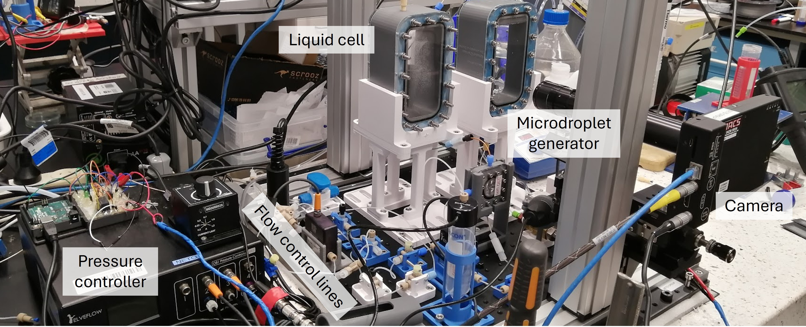
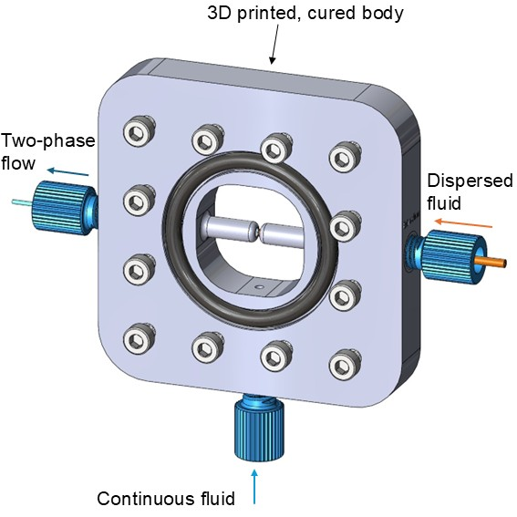
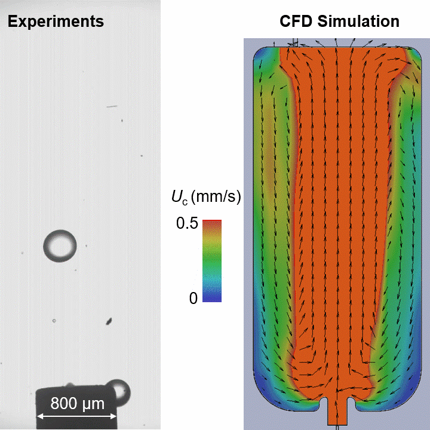
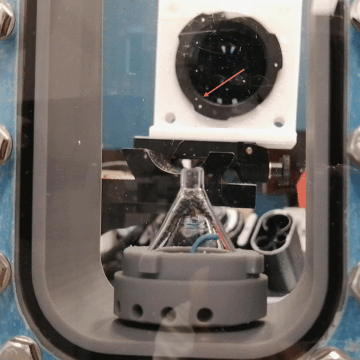

Droplet Dynamics & Interfacial Gas Layers

I developed an experimental and computational platform to investigate whether dissolved air accumulates at rising oil-water interfaces and produces measurable interfacial slip. The system generates silicone-oil and n-hexadecane microdroplets approximately 100 to 1,000 µm in diameter and measures their motion under controlled gas-saturation conditions.
The co-flow generator combines a stereolithography-manufactured body with interchangeable PEEK receiver capillaries, replacing fragile fixed glass nozzles and allowing the droplet-size range to be changed efficiently. An optically transparent capillary section provides visual access to droplet formation, while an Elveflow pressure controller independently regulates the carrier and dispersed phases.
Transporting the droplets into a 60 × 60 × 130 mm observation cell created a major measurement challenge. The carrier water entered as a laminar two-phase jet that accelerated the droplets, promoted coalescence, and disturbed their trajectories. Following iterative design and parametric studies in SolidWorks and OpenFOAM, I developed an internal diffuser that decelerates and redistributes the inlet flow. The final design allowed the droplets to recover steady rise behaviour within only a few millimetres above the diffuser, enabling reliable terminal-velocity measurements.
I complemented the experiments with a convective Epstein-Plesset model for interfacial gas accumulation and a three-phase hydrodynamic model based on a linearised Bhatnagar-Gross-Krook formulation. These models connect dissolved-gas transport with gas-layer thickness, interfacial mobility, apparent slip, and the measured droplet dynamics. The principal study is under review, with a companion experimental-methods paper in advanced preparation.


Generator Concept
3D view of the designed micro-droplet generator system. The dispersed phase eneters the chamber througha 65 μm PEEK tubing. The continous flow enters the chamber through a 1 mm opening. Spacing between the end of the injector line is carefully tuned to be almost half of its opening size, 33 μm to, to improve shearing off the droplets by the continuous flow. The resulting two-phase flow carriers the generated droplets out of the system. Depending on the droplet size range, the carrier tubing size can change from 150 μm for fine microdroplets to 800 μm for larger droplets.

Microdroplets Acceleration Problem
High-speed video on the left shows generated 20 cSt PDMS droplets entering the liquid-cell being carried by a water flow jet. The droplets decelerate as they rise, but as seen in the CFD simulaiton, projected on the mid-plane of the cell, water enters as a jet into the cell from the narrow 800 μm opening and act as a laminar jet for which a few metres is required to decya by 90%.

From Flow Suppression to Reliable Droplet Delivery
I evaluated four approaches to suppress the carrier-water jet while preserving reliable droplet transport. An internal glass capillary reduced the jet velocity by approximately 40 to 50%, but the remaining momentum still required an impractically long recovery distance. Redirecting an extended injection line downwards also proved unsuitable because droplets frequently reached the cell floor and returned along unpredictable trajectories.
A circumferential diffuser performed much better hydrodynamically. Parametric studies identified a combination of radial-hole number, hole diameter, and upper-outlet size that reduced the incoming-flow momentum to nearly the minimum attainable within the cell. However, experiments revealed a critical three-phase limitation: droplets became disordered near the outlet, adhered to the upper glass surface, accumulated, coalesced, and eventually obstructed the opening.
This iterative process established that successful flow conditioning required more than jet deceleration. The device also needed to preserve droplet spacing and axial alignment while preventing recirculation, surface contact, and blockage. These requirements guided the development of the final diverging diffuser, which enabled droplets to recover steady rise behaviour within only a few millimetres of entering the observation region.
Open Source Code & Publications
Selected general-purpose modelling utilities and demonstration cases are available on GitHub. The validated research implementation and supporting data will be released following publication, subject to co-author and institutional requirements.